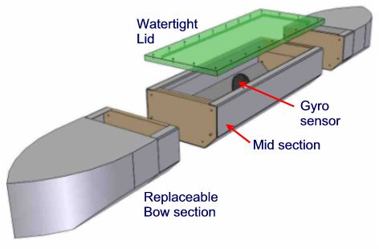
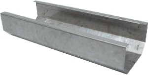
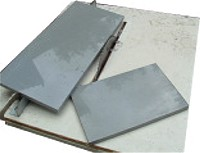
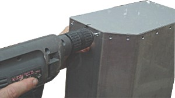
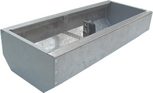
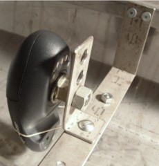
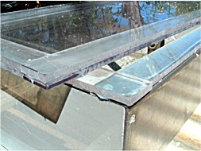
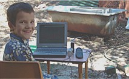
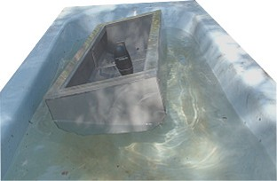
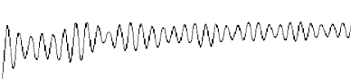

The real Noah's Ark was made of wood, but this model is mostly metal. It is not the strength we are investigating, but its behavior in the water. The model is 1800mm long (around 6 feet), which is almost identical to the model by Rod Walsh, and represents a scale of around 1:76 depending on the cubit length. The bow and stern sections shown below are for illustration only. Tests will be carried out on a variety of end shapes ranging from the completely rectangular block to the highly ship-shaped tapered bow and stern. You can run the Ark Scale Calculator to get the mass of the thing. At 1800mm it is almost exactly HO gauge (1:87) using the Royal Egyptian cubit. At a draft of 0.4 of depth, this gives a total mass around 40kg (the weight of a bag of cement). So there is plenty of mass to be added.

A parallel mid section is created quite simply by folding some steel and blocks in the end. Very square end sections can also be folded in steel (around 1mm), which is the quickest construction method. More sculptured shapes will require combinations of timber, plywood and fiber-glass. The lid requires quite a few screws to maintain a watertight seal. The model is supposed to capsize sometime - given a worse case beam sea. For quick access a smaller hand-size lid could be fitted directly over the sensors. The gyroscopic sensor detects only angular movements not linear motions, so an exactly central location is not necessary. In fact, it is better to leave this spot for an accelerometer if this gets added later.
The dominant motion is roll. It is also the capsize action, so the roll properties need to be carefully matched. Estimates of the draft and center of gravity of Noah's Ark must be matched in the model. This means the right weight and the correct height of that weight. The third constraint is the matching of rotational inertia. This is a bit trickier. The mass must be distributed at the same average distance away from the center so that the inertia (flywheel effect) of the hull during roll also matches the ark. Of course, we don't know exactly how the ark was loaded, but we should at least be consistent with proposed loading arrangements which usually have a central corridor and relatively even distribution of mass. This should give a mass moment of inertia slightly higher than that of a uniformly dense solid block. With the model however, the steel hull may need to be compensated by centering the added masses somewhat. All this must be repeated for the pitch motion also. Such a balancing act is asking for some code. As for yaw, it should be safe to assume correct roll and pitch properties would give a reasonable yaw behavior.
You can visualize the effect of raising and lowering the center of gravity using the Roll Buoyancy Simulator.
The steel is cut and folded. I had 2mm Chrome steel sitting around. (12% Chrome, no Nickel. Also known as poor man's stainless. It is rust resistant but can corrode a little on cut edges) Not a good move. The very thick steel proved too much for a hand folder and had to be finished off on a brake press. At least it will be easy to attach things.

I also had some 15mm PVC sitting around, just right for filling in the ends. PVC plate is usually colored gray - don't ask me why. The saw is 60 teeth on a 235mm (9.25") blade - a fine toothed standard wood-cutting blade, which cuts the plastic fine. A light spray of lubricant is needed to keep the blade from heating the plastic. PVC is not the best material to work with, it stinks and it melts fairly easily. It is not brittle however, so it takes screws OK. Unlike most thermoplastics, it can be solvent bonded which is why it is used for plumbing pipes. Sixteen zinc plated countersunk screws (8g x 20mm) hold each end plate. You have to be pretty careful with pre-drilling because it is quite easy to overheat and melt the plastic if you get too excited. The joint was sealed using a neutral cure silicone. (Acetic cure silicone goes off faster but tends to rust things)


The next step is to mount the Gyromouse. It should be reasonably secure so that we don't introduce vibrations. At the same time it wants to be quick to remove and all the switches easily accessible - including the all important gyro mode button underneath. This mouse happens to be dead center in this midsection, but this is not really necessary. A second mouse is likely to be used to gather yaw motion anyway, so they can't both be exactly amidships. Besides, angular motions are actually independent of location in the hull, it is the linear motion that needs to be dead centre. All these brackets are designed to be adjustable because you never know what extra things might be added later. The golden rule for prototyping - make things adjustable!

If the mouse sensor turns out to be successful, I'll probably mould a pocket to slip the mouse into. For now it should suffice to hold the mouse by the ball locking bezel. This brings us to another issue - prevention of the mouse ball from overriding the gyro signal. To be sure, the ball is removed and a small wad of foam stuffed into the ball cavity to lock the encoders in place. See more about the gyroscopic mouse

Next is the lid. I had some 6mm polycarbonate sitting around too, secondhand. It's good to make it out of scrap because this item is a prime candidate for serious modifications as time goes by - access holes, camera windows, antennae and unforeseen extras.

It took a while for the silicone to dry. The next step wasn't a bathtub ark but an ark in a bathtub. Well, about half the ark anyway. Needed some help to press the start button.

The restricted size of the bathtub strongly altered the roll behavior, but at least it gave some idea of the performance of the motion recording. The generous bilge radius represented by a 50mm chamfer is intended to have replaceable radii if desired.

The un-calibrated plot of the first bathtub trial, showing extremely low roll decay due to the bathtub interaction. In a large body of water the roll should decay more consistently. A roll period is pretty obvious, but this might be the resonant frequency of the bathtub acting as a standing wave [1]. In fact the graph looks like two waves of different period - one for vessel roll period and one for the bathtub resonance. Anyway, it looks promising.

1. Seiches (sayshes) Wave. The rocking of water confined in a small space -- this rocking occurs at a specific resonant frequency. These waves oscillate vertically with no progressive movement. Also called a standing wave, and can occur in confined areas such as lakes, bays, estuaries and harbors which are open to the sea at one end. The mechanism of a standing wave is that two opposing equal waves are superimposed. Return to text